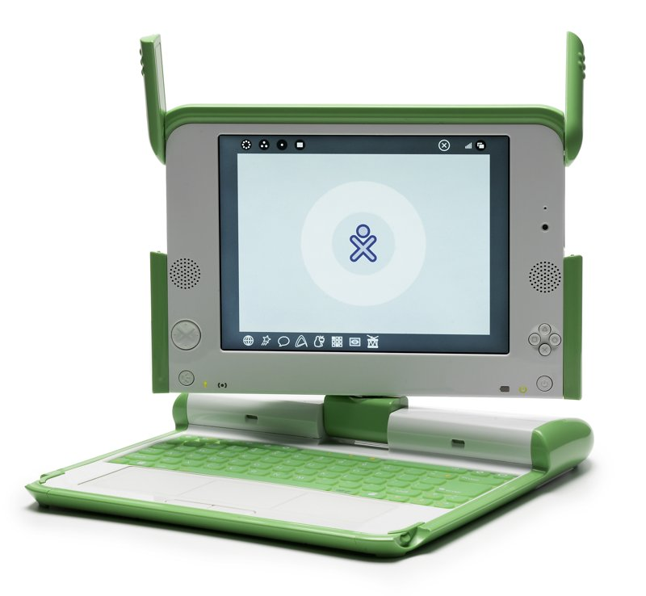

3. La Lliçó d'«Un Portàtil per Nen» (OLPC): Quan regalar tecnologia sense formació fracassa
L'any 2005, el reconegut professor Nicholas Negroponte del laboratori Media Lab del MIT (Massachusetts Institute of Technology) va presentar al Fòrum Econòmic Mundial de Davos una iniciativa revolucionària batejada com «One Laptop per Child» (OLPC). La promesa era fascinant: dissenyar un miniordinador portàtil ultralent, robust, resistent a la pols i de color verd cridaner (anomenat XO-1) amb un cost de fabricació de només 100 dòlars, i distribuir-ne milions d'unitats a nenes i nens d'escoles rurals empobrides de l'Amèrica Llatina i l'Àfrica.
La filosofia del projecte partia d'un supòsit purament tecnocèntric i assistencialista: es considerava que la tecnologia en si mateixa era un instrument màgic d'alliberament. Els impulsors defensaven que els nens aprenguessin de manera autodidacta explorant l'ordinador sense necessitat de mestres formats ni de canvis curriculars: «Només cal donar-los l'aparell i ells sols aprendran». Governs com el del Perú van comprar més de 900.000 portàtils XO, convertint-se en el major desplegament del programa al món, amb una despesa pública superior als 200 milions de dòlars.
Cinc anys després, el Banc Interamericà de Desenvolupament (BID) va publicar una exhaustiva avaluació d'impacte a centenars d'escoles rurals dels Andes i l'Amazònia peruana. Les conclusions van sacsejar la comunitat educativa internacional: no hi havia cap evidència de millora en les competències lectores ni de comprensió matemàtica dels alumnes.
Què havia fallat? Els problemes eren estructurals: la majoria de les escoles rurals ni tan sols tenien endolls suficients ni electricitat estable per recarregar les bateries; els docents locals no havien rebut ni un sol dia de capacitació sobre com integrar els ordinadors en les classes de ciències o llengua; el programari venia sovint en anglès o espanyol sense traducció a llengües indígenes; i quan una pantalla o un teclat es trencava, no hi havia cap taller, tècnic ni recanvi al poble, de manera que al cap de pocs mesos més del 40% dels equips acabaven arraconats als armaris de les escoles com a mobles inútils. El projecte va demostrar que l'enginyeria sense capacitació humana ni manteniment comunitari és un malbaratament de recursos.
Segons els informes pedagògics posteriors, per una fracció mínima del cost dels aparells —aproximadament 2.000 $ per escola destinats a formar de manera continuada el professorat i crear un banc comunitari de peces de recanvi—, el projecte hauria pogut garantir que els ordinadors funcionessin i s'utilitzessin profitosament durant molts anys.

A la primera columna veus com va actuar el projecte OLPC (model tecnocèntric i assistencialista). Completa la segona columna proposant com hauria de ser un Model de Cooperació Comunitària i Sostenible per a cadascun dels 5 criteris.
| Criteri d'Avaluació | Model Assistencialista / Tecnocèntric (Com va actuar el projecte OLPC) |
La teva Proposta: Model Comunitari i Sostenible (Completa les frases amb la teva proposta) |
|---|---|---|
| 1. Punt de partida i diagnòstic | Donació d'un aparell decidit des d'un despatx estranger sense consultar ningú. | |
| 2. El paper del professorat | Ignorat: es creu falsament que l'infant aprèn sol jugant amb la màquina. | |
| 3. Manteniment i recanvis | Inexistent: si es trenca una pantalla o teclat, no hi ha recanvis ni taller al poble. | |
| 4. Llengua i continguts educatius | Programari en anglès o espanyol estàndard, aliè a la cultura i llengua local (quítxua/aimara). | |
| 5. Avaluació de l'èxit | Mesurat només pel nombre d'ordinadors repartits (màrqueting polític). |
Sovint es creu que comprant aparells d'última generació (ordinadors, pantalles digitals o tauletes) l'educació millorarà automàticament. Per què creus que els polítics i grans empresaris prefereixen fer fotos regalant pantalles abans que invertir en formar docents o millorar els edificis escolars?
Molts dels programes dels portàtils XO estaven en anglès o espanyol estàndard, mentre que a les zones rurals del Perú els infants parlaven quítxua o aimara a casa. Què hauria d'haver fet l'equip de desenvolupadors abans de llançar el programari a gran escala?
Quan un ordinador espatllat depèn de peces patentades que només es fabriquen a milers de quilòmetres, la comunitat queda lligada de peus i mans. Com es podria aplicar el concepte de «maquinari obert» (open hardware) i l'ús de peces universals per evitar aquest problema?
🔢 4. Càlculs Matemàtics i Representació Gràfica: Auditoria del Projecte OLPC
Auditoria d'EnginyeriaA partir de les dades oficials de l'informe d'impacte del Banc Interamericà de Desenvolupament (BID) sobre el desplegament del programa al Perú, realitza els càlculs d'auditoria i la representació gràfica de sectors com a enginyer/a:
(Inversió comunitària calculada per experts: amb només 2.000 $ per escola es formava tot el professorat en pedagogia digital i es proveïa un banc de recanvis bàsics per reparar els equips al poble).
Calcula el volum d'ordinadors que correspon al 40% del total distribuït:
Calcula el nombre d'ordinadors corresponents al 60% restant en ús:
Calcula la despesa pública units per cada portàtil a partir del pressupost total:
Calcula el valor en dòlars del 40% dels fons públics que es van malbaratar:
Calcula quantes escoles rurals es podrien haver dotat d'aquest pla integral de formació docent i banc de recanvis (a 2.000 $ per escola) amb els fons públics que es van malbaratar en els ordinadors avariats:
Conclusió d'enginyeria: Què demostren aquests càlculs sobre per què és un error greu comprar tecnologia sense pressupostar manteniment ni formació docent?